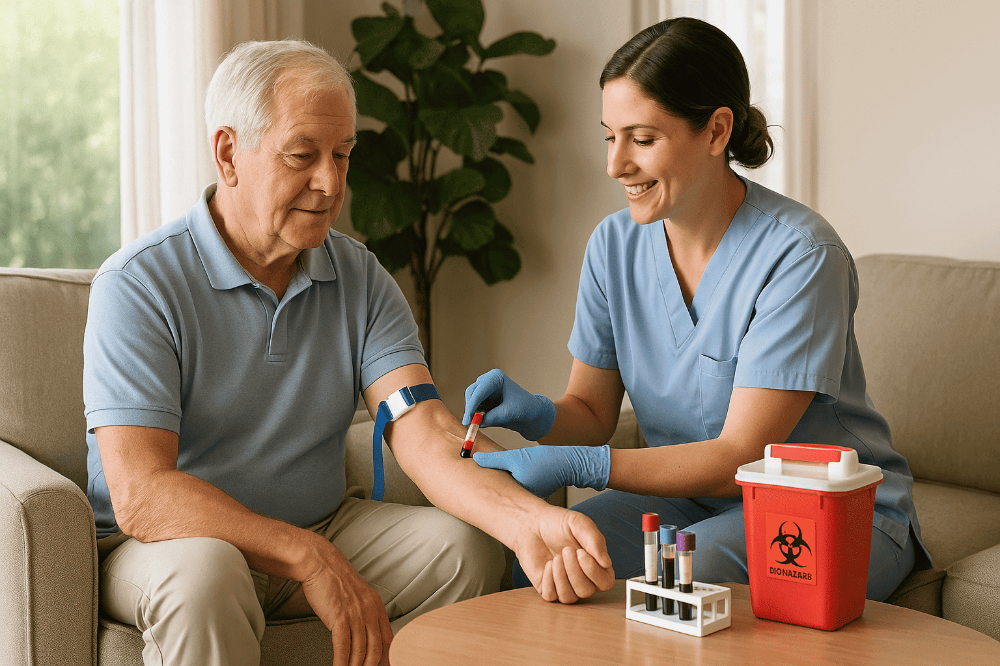

Extracción a domicilio
El servicio de toma de muestra a domicilio cubre toda la ciudad para que las personas con movilidad reducida o con dificultad para trasladarse a nuestra sede pueda recibir su atención.
Atendemos todas las obras sociales.
Envíos de informes por WhatsApp.
Extracciones a domicilio.
Somos un laboratorio de Análisis Clínicos ubicado en Azul, provincia de Buenos Aires con más de cinco décadas de trayectoria al servicio de la salud.
Nuestra historia refleja un compromiso continuo con la precisión y calidad en todos los ensayos, así como en la atención personalizada de cada paciente.

Contamos con un equipo de profesionales altamente calificados y en constante actualización, dedicados a proporcionar un servicio de excelencia.
Diariamente todo el equipo de trabajo participa en la atención personalizada al público y en el control de la calidad analítica.
El laboratorio cuenta con profesionales y equipamiento apropiado para brindar precisión y confiabilidad en cada ensayo, asegurando la calidad de los análisis bioquímicos.
Brindamos atención personalizada por nuestros profesionales a cada paciente.
Realizamos extracciones de sangre a domicilio.
Realizamos análisis clínicos y bacteriológicos.
Atendemos todas las obras sociales en convenio con la Federación Bioquímica de la Provincia de Buenos Aires (FABA) y con el Círculo de Analistas Clínicos de Azul.
En caso de atención particular, para conocer el precio de los análisis que debe realizarse, enviar la foto de la orden médica por Whatsapp al 2281-651522 o por mail labalvear54@gmail.com, le brindaremos un presupuesto a la brevedad.
Le recordamos que es recomendable que concurra 24 o 48 hs. antes de la extracción al laboratorio para autorizar las órdenes por Internet.


Laboratorio Alvear, desde su fundación en 1973, está comprometido con la mejora continua de la calidad, ofreciendo un servicio de excelencia en los análisis bioquímicos.
Contamos con un sistema de gestión integrado que nos permite trabajar con tubo único, código de barra y transferencia electrónica de datos, lo que garantiza la trazabilidad de las muestras, asegura máxima confiabilidad en los resultados y tiempos óptimos de entrega de los mismos.
El laboratorio se encuentra acreditado por la Fundación Bioquímica Argentina (FBA) según las Normas del Manual MA3 del Programa de Acreditación de Laboratorios (PAL); este Programa de Acreditación de FBA se basa en la evaluación, mediante auditorías, de estándares de estructura, procesos y resultados, constituyendo la acreditación un Símbolo de Garantía de la calidad.

El servicio de toma de muestra a domicilio cubre toda la ciudad para que las personas con movilidad reducida o con dificultad para trasladarse a nuestra sede pueda recibir su atención.
Nuestros profesionales están capacitados para la atención pediátrica. Nuestro objetivo es que el niño se sienta contenido de manera que pueda recordar la experiencia de la forma más positiva posible.

Puede pedir al laboratorio el envío del informe por WA o por mail.
Realice todas sus gestiones en el laboratorio en 3 simples pasos.
Tome una fotografía clara de su orden médica y envíela por WhatsApp.
Envíe la imagen junto con sus datos personales a nuestro número de WhatsApp.
Recibirá por WhatsApp todas las indicaciones de preparación y coordinación de horarios.
Cada estudio implica una preparación en particular, y en algunos casos, un horario especial. Esta información debe solicitarla al laboratorio. Prepararse de manera adecuada es importante para que el resultado y su interpretación sean confiables, de otra manera pueden resultar incorrectos o dudosos, o no podrá realizarse el análisis.
Atendemos todas las Obras Sociales en convenio con la Federación Bioquímica de la Provincia de Buenos Aires (FABA) y con el Círculo de Analistas Clínicos de Azul.
Requisitos para su atención:
Para consultas relacionadas, comuníquese por Whatsapp al 2281-651522